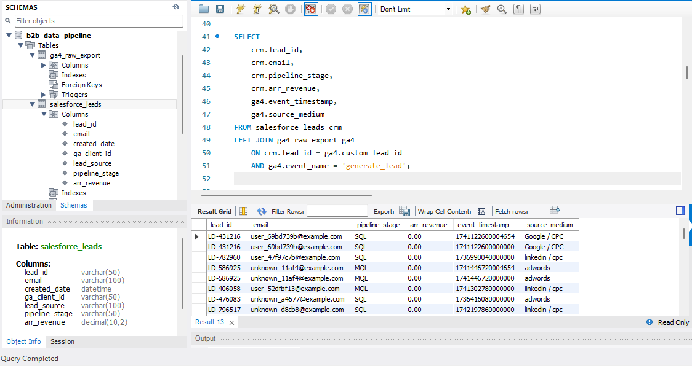
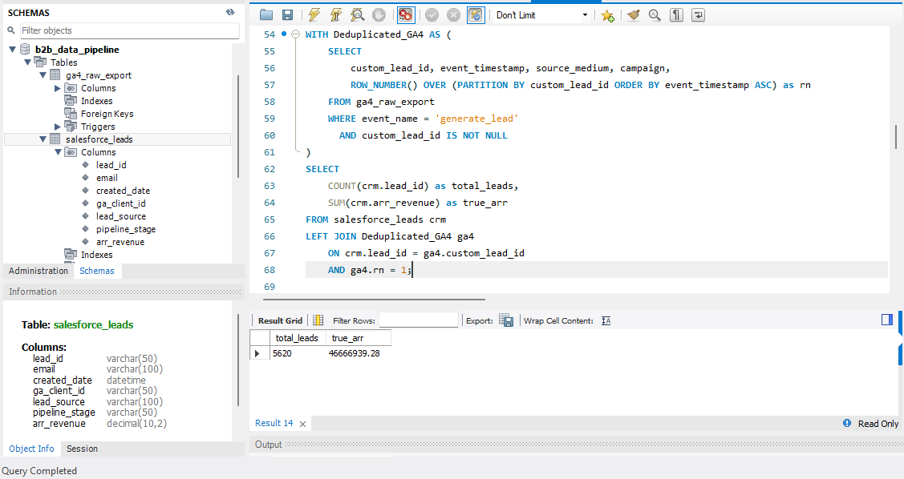
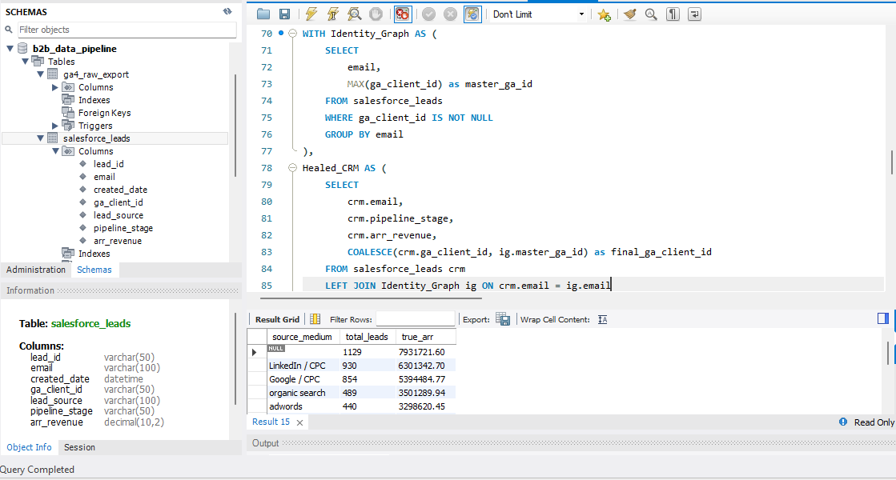
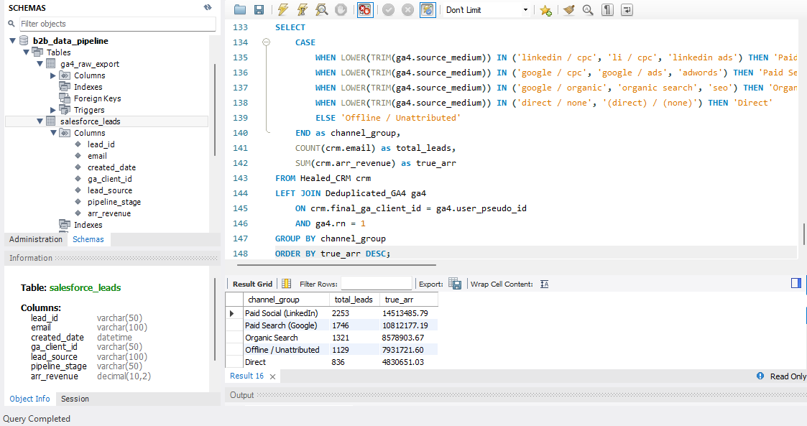

How I built a deterministic SQL Identity Graph to connect raw GA4 event logs directly to Salesforce CRM data. This project resolved a severe Q3 reporting discrepancy between Marketing and Sales, recovering 1,600 missing leads and eliminating $7M in ghost pipeline revenue.
During the Q3 executive pipeline review, a severe data discrepancy emerged: Marketing reported highly efficient Cost Per Lead (CPL) metrics, while Sales reported degraded lead volume and missing revenue. To bridge this gap, I bypassed standard BI connectors and built a custom ELT pipeline joining raw GA4 BigQuery exports with Salesforce CRM data. By identifying a Google Tag Manager double-fire error and engineering a deterministic SQL Identity Graph to heal disconnected records, I successfully aligned the datasets. This project recovered 1,600 missing leads, eliminated $7M in false pipeline revenue, and provided leadership with a verified financial baseline for their quarterly ad budgets.
In B2B SaaS, data silos between marketing automation and CRM systems are the main reason why CAC and ROAS numbers can be inaccurate.
Our executive team ran into this issue one Monday morning. The VP of Marketing presented a slide showing 7,285 leads from LinkedIn and Google Ads. The VP of Sales countered with a Salesforce dashboard showing a heavily degraded lead volume and missing closed-won revenue. Sales blamed Marketing for focusing on clicks that did not convert, while Marketing said Sales was not following up on leads.
Leadership quickly paused $150,000 in monthly ad spending. The CMO asked for the raw data to connect ad spend to real closed-won revenue and to find the source of the problem.
The usual default data connectors did not work, so I had to use the raw data directly: a BigQuery export of GA4 events and a CSV file of Salesforce leads.
Here’s how I solved it.
Ideally, merging a web analytics table with a CRM database is straightforward: you use a LEFT JOIN on a shared primary key, such as lead_id.
To set a baseline, I wrote a simple query joining CRM pipeline data to GA4 generate_lead events. The results quickly showed a problem.
SELECT
crm.lead_id, crm.email, crm.pipeline_stage, crm.arr_revenue,
ga4.event_timestamp, ga4.source_medium
FROM salesforce_leads crm
LEFT JOIN ga4_raw_export ga4
ON crm.lead_id = ga4.custom_lead_id
AND ga4.event_name = 'generate_lead';

Fig 1: The initial naive join exposing the $53M Cartesian explosion.
Instead of the 7,285 leads in the CRM, the joined data showed over 8,450 rows. Even worse, the total pipeline ARR jumped to more than $53 million, which was clearly not accurate.
This is a common data modeling problem called a Cartesian explosion (or fan-out). When a database finds multiple matches on the right side of a JOIN, it duplicates the left-side row for each match. For example, if a $50,000 deal matches twice in GA4, the dashboard will show $100,000.
If I had trusted this raw join and sent it to Power BI, leadership might have made serious forecasting mistakes. I needed to find and fix the duplication at its source.
I singled out the GA4 leads that were duplicated and looked at the raw BigQuery schema. By checking the event_timestamp and user_pseudo_id, I saw a clear pattern.
I found that the same user was triggering the generate_lead event twice, sometimes just seconds or minutes apart. The Google Tag Manager (GTM) tag was firing twice. For example, if someone submitted a demo request, left the page, and then came back or refreshed the "Thank You" page, GTM sent a duplicate conversion to GA4.
To fix this in SQL, I could not just use GROUP BY because that would remove important row-level UTM and campaign details needed for the final attribution model.
Instead, I built a Common Table Expression (CTE) using the ROW_NUMBER() window function. By grouping data by custom_lead_id and sorting events by time, I could identify the real first touchpoint and filter out duplicates.
WITH Deduplicated_GA4 AS (
SELECT
custom_lead_id, event_timestamp, source_medium, campaign,
ROW_NUMBER() OVER (PARTITION BY custom_lead_id ORDER BY event_timestamp ASC) as rn
FROM ga4_raw_export
WHERE event_name = 'generate_lead'
AND custom_lead_id IS NOT NULL
)
SELECT
COUNT(crm.lead_id) as total_leads,
SUM(crm.arr_revenue) as true_arr
FROM salesforce_leads crm
LEFT JOIN Deduplicated_GA4 ga4
ON crm.lead_id = ga4.custom_lead_id
AND ga4.rn = 1;

Fig 2: Utilizing ROW_NUMBER() to eliminate GTM double-fires and correct ARR.
This fixed the fan-out problem. The ARR numbers went back to normal, removing about $7M in false pipeline revenue.
To fix the root cause, I worked with the front-end team to make a lasting change. We added a unique transaction_id to the dataLayer when a form was first submitted and set up GTM to use a session storage flag. I also added an Exception Trigger in GTM so the conversion tag would only fire once per session, protecting data quality in the future.
After removing the duplicate leads, the matched lead count dropped to 5,620. Then I faced a new problem: more than 1,600 qualified leads were in Salesforce but had no link to GA4.
I filtered the CRM data to look at these unmatched leads. The data revealed a bigger issue with how leads were handled:
lead_id) was NULL.ga_client_id) was NULL.lead_source was overwhelmingly categorized as "Manual Entry" or "Cold Call."I found that Sales Account Executives were getting calls or emails from prospects and entering their details directly into Salesforce. Because they skipped the website lead form, the tracking data was lost.
Most analysts might label these 1,600 leads as only "Sales Generated / Offline," telling the VP of Marketing that her campaigns had no impact. But in B2B, buyers almost always interact online before calling Sales. They probably clicked ads or read blog posts weeks earlier. The tracking data was not missing; it was just disconnected.
To reconnect these unmatched leads and rebuild the real buyer journey, I built a deterministic Identity Graph in SQL.
An Identity Graph uses fallback logic to connect user sessions across platforms. If the main key is missing, it tries to match using a secondary key, such as the prospect’s email address.
I queried the entire CRM history to build a master bridging table. This CTE searched for cases where both a user’s email and their GA4 cookie (ga_client_id) were captured in past events, such as whitepaper downloads or webinar signups.
Next, I ran the current Q3 pipeline through this graph using the COALESCE() function. When SQL found a manual entry with a missing tracking ID, COALESCE checked the Identity Graph. If the email was in our history, it pulled the old ga_client_id and linked it to the new record.
WITH Identity_Graph AS (
SELECT
email,
MAX(ga_client_id) as master_ga_id
FROM salesforce_leads
WHERE ga_client_id IS NOT NULL
GROUP BY email
),
Healed_CRM AS (
SELECT
crm.email,
crm.pipeline_stage,
crm.arr_revenue,
COALESCE(crm.ga_client_id, ig.master_ga_id) as final_ga_client_id
FROM salesforce_leads crm
LEFT JOIN Identity_Graph ig ON crm.email = ig.email
),
Deduplicated_GA4 AS (
SELECT
user_pseudo_id,
source_medium,
campaign,
ROW_NUMBER() OVER (PARTITION BY user_pseudo_id ORDER BY event_timestamp ASC) as rn
FROM ga4_raw_export
WHERE event_name = 'generate_lead'
)
SELECT
ga4.source_medium,
COUNT(crm.email) as total_leads,
SUM(crm.arr_revenue) as true_arr
FROM Healed_CRM crm
LEFT JOIN Deduplicated_GA4 ga4
ON crm.final_ga_client_id = ga4.user_pseudo_id AND ga4.rn = 1
GROUP BY ga4.source_medium
ORDER BY true_arr DESC;

Fig 3: Using COALESCE to resolve identities and heal disconnected CRM records.
This approach successfully linked hundreds of "offline" CRM leads back to the digital marketing campaigns that first brought them in.
With the mapping in place, the data was accurate but not ready for executives. The raw output was messy because different media agencies used inconsistent UTM tracking (like LinkedIn / CPC, linkedin ads, LI / cpc).
To make the final dashboard clear for executives, I added a normalization step to the master join. Using LOWER(), TRIM(), and CASE statements, I cleaned up the messy source strings into standard channel groups.
WITH Identity_Graph AS (
SELECT
email,
MAX(ga_client_id) as master_ga_id
FROM salesforce_leads
WHERE ga_client_id IS NOT NULL
GROUP BY email
),
Healed_CRM AS (
SELECT
crm.email,
crm.pipeline_stage,
crm.arr_revenue,
COALESCE(crm.ga_client_id, ig.master_ga_id) as final_ga_client_id
FROM salesforce_leads crm
LEFT JOIN Identity_Graph ig ON crm.email = ig.email
),
Deduplicated_GA4 AS (
SELECT
user_pseudo_id,
source_medium,
campaign,
ROW_NUMBER() OVER (PARTITION BY user_pseudo_id ORDER BY event_timestamp ASC) as rn
FROM ga4_raw_export
WHERE event_name = 'generate_lead'
)
SELECT
CASE
WHEN LOWER(TRIM(ga4.source_medium)) IN ('linkedin / cpc', 'li / cpc', 'linkedin ads') THEN 'Paid Social (LinkedIn)'
WHEN LOWER(TRIM(ga4.source_medium)) IN ('google / cpc', 'google / ads', 'adwords') THEN 'Paid Search (Google)'
WHEN LOWER(TRIM(ga4.source_medium)) IN ('google / organic', 'organic search', 'seo') THEN 'Organic Search'
WHEN LOWER(TRIM(ga4.source_medium)) IN ('direct / none', '(direct) / (none)') THEN 'Direct'
ELSE 'Offline / Unattributed'
END as channel_group,
COUNT(crm.email) as total_leads,
SUM(crm.arr_revenue) as true_arr
FROM Healed_CRM crm
LEFT JOIN Deduplicated_GA4 ga4
ON crm.final_ga_client_id = ga4.user_pseudo_id
AND ga4.rn = 1
GROUP BY channel_group
ORDER BY true_arr DESC;

Fig 4: Final Master Join applying string normalization for clean BI reporting.
Post-Identity Graph Resolution (Deduplicated & Healed)
| Channel Group | Total Leads | True ARR |
|---|---|---|
| Paid Social (LinkedIn) | 2,253 | $14,513,485 |
| Paid Search (Google) | 1,746 | $10,812,177 |
| Organic Search | 1,321 | $8,578,903 |
| Offline / Unattributed | 1,129 | $7,931,721 |
| Direct | 836 | $4,830,651 |
When I showed the final, cleaned dataset to the CMO and VP of Sales, the misalignment between departments was quickly resolved. The data showed that Marketing was bringing in quality leads, but Sales processes were breaking the attribution and tagging issues were inflating the numbers.
By building this unified data pipeline, I achieved three key business results:
I also set up a feedback loop with RevOps to update Salesforce lead creation rules, making sure manual entries now require all key fields.
High-impact data analytics is not just about writing complex SQL joins. It is about really understanding business processes, from the first ad click to the sales call, and building strong data models that reflect real human actions.
If you need support with advanced tracking, data pipeline engineering, Power BI modeling, or SQL-based attribution analysis, send me a message to discuss your data architecture.